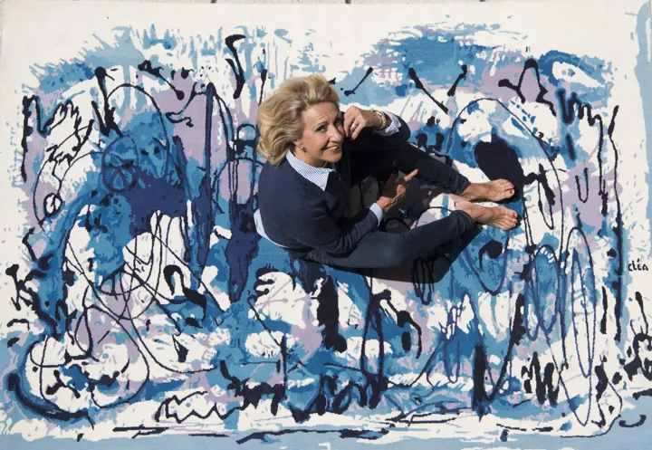
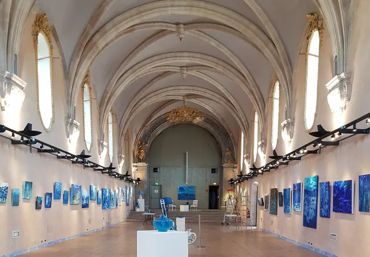
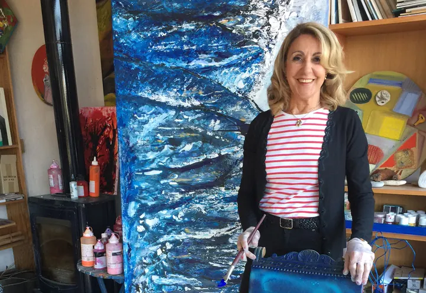

Artiste peintre · La Ciotat · Sud de la France
Cléa-Chantal Léandri
Abstraction tachiste & expression lyrique — la matière, la couleur et la lumière du sud.
« Je ne peins pas ce que je vois. Je peins ce que je pense. »Pablo Picasso
Bougez la souris, cliquez et maintenez pour charger la matière — attention, elle coule.Touchez Peindre puis dessinez du doigt.

L'artiste
Une peinture qui jette, attend, regarde
Après une formation classique, Cléa-Chantal Léandri suit durant trois années les cours de l'Atelier Imagine avec le peintre suisse Thierry Bugnion. Avec lui, elle perfectionne ses bases des techniques de l'aquarelle, de la gouache, de l'acrylique et de l'huile. Elle complète son art au cours de nombreuses master classes de l'académie de peinture du « Moulin de Perrot » avec des professeurs comme les peintres Jequel, Jérôme Tisserand, Thibaud de Reimpré et surtout le peintre italien Giancarlo Bargoni. Elle avouera que c'est grâce à ce dernier qu'elle a découvert sa véritable nature dans le mouvement de l'expression lyrique.
Fascinée par la matière et curieuse de toutes les nouvelles molécules que la technologie met à notre disposition, l'artiste vit parfaitement bien ancrée dans son époque. Ses recherches l'amènent à mettre en œuvre toute découverte qui l'interpelle, donnant ainsi à ses œuvres une touche très particulière, sa « signature ».
« Travailler le fond de la toile en jetant différents bains de pigments qui prendront le temps de sécher, analyser les taches de couleurs et si le fond de toile paraît satisfaisant, commencer seulement à peindre. »
Après toutes ces années d'étude et de remise en question, elle s'oriente vers une abstraction tachiste qui s'apparenterait à l'écriture automatique. Poète hier déclarée, elle en subit toujours les heureuses influences. Cette manière de procéder lui laisse toute liberté sur les taches : « l'interprétation du cerveau par rapport à l'œil et aux bains multiples transcende les pigments colorés ».
Les caractéristiques de cette très attachante artiste : la recherche de la musicalité de l'ensemble des détails, l'élévation de l'esprit, la liberté et… le travail. — Solange Strimon
Ses maîtres Georges Mathieu (pour le dessin), Jean Fautrier, Tàpies, Hartung, Pollock, Pierre Alechinsky.
Œuvres
La galerie
Toutes les œuvres ne sont pas en ligne — l'atelier est ouvert sur rendez-vous.
Expositions
Sur les murs, de la Provence à Bruxelles
17 avril > 23 mai 2026
Histoires d'eau
La Ciotat, Chapelle des Pénitents Bleus
Invitation à un voyage sous les embruns vers un dialogue entre la Méditerranée et l'océan.

Quelques tableaux de l'exposition
4 > 27 juillet 2025
Entre Espace Art Gallery
Bruxelles
Liste des tableaux exposés lors de l'exposition.
- Forêt vierge
- Carrières Bibemus Aix
- Après le feu
- Naissance de l'été
- Lumière d'automne
- Les vignes de Provence en automne
- Le lac
- Jour d'été
- Labyrinthe
Juillet 2026
Cap Bénat
Le Var
Liste des tableaux exposés lors de l'exposition au Cap Bénat.
- Le lac des cygnes
- Le lac 2024 · 38 × 40 cm
- La rivière 2024 · 50 × 70 cm
- La nuit en Toscane 2011 · 80 × 40 cm
- La guerre en Ukraine 2024 · 60 × 73 cm
- La chèvre et le porc-épic 2015 · 50 × 60 cm
- L'orchestre 2011 · 120 × 40 cm
- L'amour en automne 2018 · 90 × 90 cm
- Buffles massaï 2015 · 54 × 81 cm
- 2022Sélectionnée pour l'exposition « Vœux d'artistes » à Marseille, association caritative au profit des enfants malades des hôpitaux marseillais — vernissage à la librairie des Arsenaux, 17 novembre.
- 2021Exposition personnelle à la Cadiérenne, La Cadière-d'Azur.
- 20198 juin au 1er juillet — Chapelle des Pénitents Bleus, La Ciotat.
- 201819 au 30 juillet — exposition personnelle « New-York et plus », salles voûtées, Cassis.
- 20175 au 15 juin — exposition personnelle, salles voûtées, Cassis.
- 201624 juin au 4 juillet — exposition personnelle, salles voûtées, Cassis. Du 26 septembre au 20 octobre — exposition personnelle, Médiathèque Jean d'Ormesson, Marignane.
- 2015Exposition personnelle à la Galerie Marchand d'art, Le Castellet (juillet-août). Rétrospective « 15 ans de peinture », Chapelle des Pénitents Bleus, La Ciotat (12 juin - 12 juillet).
- 2014Centre médical Mongrand, Marseille (31 octobre - 30 décembre). SM'ART, Salon Méditerranéen d'Art Contemporain, Aix-en-Provence (1er - 5 mai).
- 2013Office de Tourisme, Saint-Cyr (19 - 25 juillet). Parvis du Protestantisme, Marseille (16 mai - 16 juin). SM'ART, Aix-en-Provence (2 - 6 mai).
- 2012Crédit Mutuel du Vieux-Port, Marseille (30 octobre - 27 novembre). Virgin Café, Marseille (1er juillet - 1er septembre).
- 2011Virgin Café, Marseille (1er décembre - 1er janvier 2012).
- 2010Salles voûtées, Cour d'honneur de l'Hôtel de Ville, Cassis (4 - 14 février).
- 2009Virgin Café, Marseille (30 novembre - 6 janvier 2010). Espace Culturel du Québec, Londres (novembre), Grande-Bretagne.
- 2008Galerie du Port, La Ciotat (10 - 23 novembre). Vente aux enchères d'art contemporain, Claude Aguttes commissaire-priseur, Neuilly-sur-Seine (septembre). Salon Artshopping, Carrousel du Louvre, Paris (7 - 8 juin). Palais des Congrès, Cannes (mai).
- 2007Château du Castellet, Var (mai). SIAPPE, Salon International d'Arts Plastiques, Perpignan (février).
- 2006Chapelle des Pénitents Bleus, La Ciotat (avril). Galerie du Port, La Ciotat (juillet). SIAPPE, Perpignan (février).
- 2005Galerie Ilde, Cannes (juillet-août).
Visite de l'atelier
Pousser la porte de l'atelier
Toutes mes œuvres ne sont pas sur le site : si vous souhaitez me rencontrer et découvrir ma collection, j'ouvre mon atelier sur rendez-vous.
On ne peint jamais pour soi, très individuellement dans son atelier : on peint toujours pour donner aux autres ce miracle du changement de la matière en éclats de lumière, en faisceaux de couleurs si profonds qu'ils peuvent entraîner sur des routes inattendues.
Avant d'arriver à un certain stade d'expression, où l'artiste se sent libéré de tous les freins d'hier, il est passé inévitablement par la représentation concrète des images et des paysages qu'il a souhaité un jour dépasser pour suggérer ses propres interprétations.
Toute œuvre d'art et forcément toute exposition correspond à un certain itinéraire de vie, de traversées d'émotions.
J'espère que dans mon travail proposé au regard de l'autre, ce dernier retrouvera le chemin de mes émotions et les clés de joie pour entrer dans mon univers où l'imaginaire s'accroche à la réalité des souvenirs enregistrés.
L'art est si précieux que parfois il devient, dans certaines circonstances, le seul rempart à la barbarie.
Chantal Léandri

Contact & Prix
Écrivez-moi
Pour connaître les tarifs des œuvres, n'hésitez pas à me contacter.